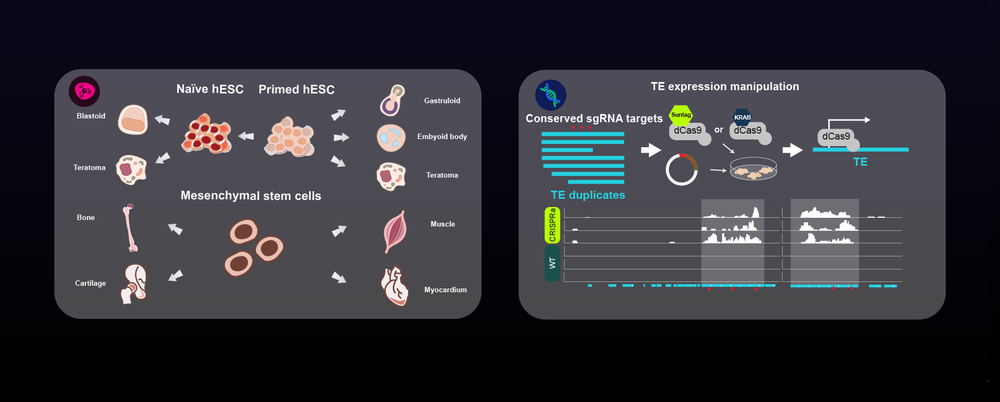
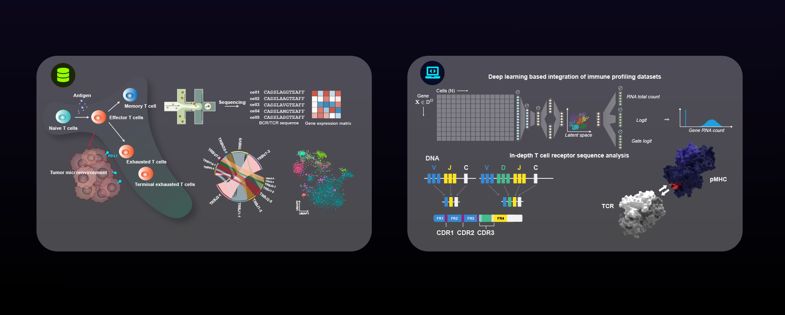

Biomedical Science
Unmasking cell pluripotency and transposable elements.
Computational Immunology & Omics
Decoding immune systems through single-cell, spatial, and TCR computation.
We develop computational and experimental frameworks for single-cell and spatial omics, TCR repertoire analysis, and autoimmune disease systems biology.
We are a group of scientists from ZJU-UoE Institute working on decoding puzzles in bio-medical sciences. Topics we are interested in include epigenetic regulation of transposable elements in stem cells and cancer, genomics technology and bioinformatic algorithm development.
By combining both wet lab experimental approaches and dry lab computational approaches, we hope to provide our unique expertises in advancing our understandings for bio-medical sciences.
我们是一群来自浙江大学爱丁堡大学联合学院的生物医学方向的科学家。我们研究的内容包括干细胞细胞命运决定中的表观遗传调控机制、基因组学大数据挖掘以及生物信息算法及工具的开发。
我们实验室由一群来自生物学、临床医学、基础医学、生物医学以及生物信息学不同学科背景的博士后、研究生、科研助理及本科生组成。通过干实验（计算相关）以及湿实验（实验技术）相结合的手段，我们希望以我们独特的视角来研究生物医学中重要的科学问题。
Two legacy research themes remain visible while the current site points readers to the updated research, people, publication and resource pages.

Unmasking cell pluripotency and transposable elements.

Data-driven biomedicine, databases and computational immunology algorithms.